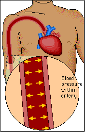
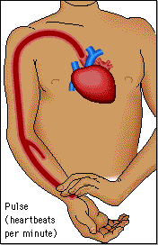

Blood moving through the blood vessels exerts pressure against the vessel walls. This blood pressure is highest in the aorta. It decreases as the blood moves through the arterioles, capillaries, venules, and veins.

With each contraction of the heart, you can feel the expansion and recoil of the elastic arteries where they pass near the surface of the skin. This is the pulse. When you take your pulse, you measure heart rate – the number of times the heart contracts per minute.
Over the next several pages you will learn how to measure blood pressure and pulse and consider how they are affected by various conditions.
 Continue to Blood Pressure.
Continue to Blood Pressure.